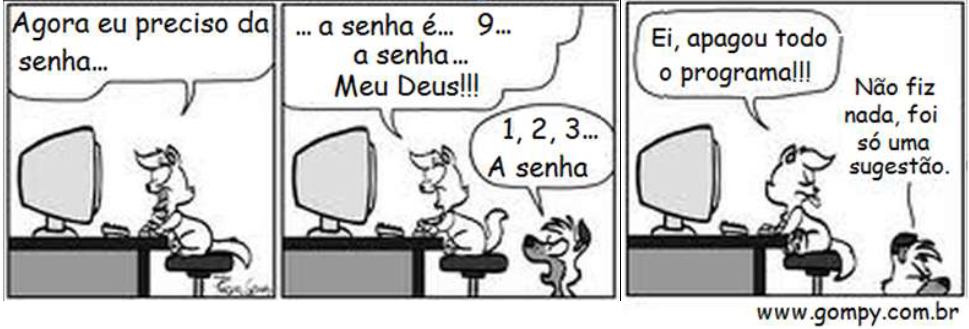

Tudo por um cotonete
Toda vez que mamãe vai tomar banho e me esquece aqui fora, fico deitado bem juntinho à porta, esperando ela acabar. Fecho os olhos mas não durmo, só finjo. Assim, quando minha irmã passa, ela não esfrega a minha cabeça nem aperta as minhas bochechas, e olha que nem as tenho. Pra falar a verdade, nunca vi um cãozinho ter bochechas, mas a doida da minha irmã sempre diz que tenho, e que nada é melhor do que apertá-las. Isso tudo me confunde um pouco, mas tudo bem. Enquanto fico quietinho aqui, posso ouvir o barulhinho da água do chuveiro, de que eu tanto gosto. Isso não quer dizer que eu goste de tomar banho. Aquele tanque e a água gelada em nada me atraem. Mas confesso, tenho vontade de experimentar um banho quentinho, de chuveiro.
Papai chegou, já ouvi o barulho que o carro dele faz quando entra na garagem. Mas vou continuar aqui, não saio daqui por nada, afinal, mamãe é mamãe. É ela quem cuida de mim.
Me leva na rua todos os dias à tarde, põe a minha comida no pratinho onde colou uma foto minha, me leva pra cortar todos estes pelos que me enchem de calor. Tenho que confessar uma coisa daquele lugar. Eles cortam os pelos, dão banho, cortam as unhas e ainda me enchem de talco. Sempre antes que mamãe chegue para me buscar, botam uma gravatinha escrita “Binho”. [...]
Disponível em:No trecho “... esperando ela acabar.” (1° parágrafo), a palavra destacada substitui
Qual dos trechos abaixo prova que o narrador é um cachorro?
A ideia do brinquedo veio da Austrália, onde estudantes de ginástica se divertiam girando aros de bambu na cintura. Em 1958, os americanos Artur Melin e Richard Knerr, donos de uma fábrica de brinquedos, importaram a ideia. A diferença é que eles fi zeram bambolês de plástico e o batizaram de hula hoop. Venderam 25 milhões de unidades em apenas 4 meses.
Disponível em: http://www2.uol.com.br/JC/sites/kids/curio_invencoes.htm. Acesso em: 28 fev. 2011.No trecho “A diferença é que eles fizeram...”, a palavra destacada está no lugar de
Levantei-me, corri a pegar o giz, aqui está, professor. Ele me olhou agradecido, o rosto cansado. Já naquela época, o rosto cansado. Dava aulas em três escolas e ainda levava para casa uma maçaroca de provas para corrigir.
O aluno preparava-se para sentar, ele, o olhar fino:
– Aproveitando que o moço está de pé, me diga: sabe o que é um anacoluto?
É o que dá a gente querer ser legal.
Vai-se apanhar o giz do chão, e o professor vem e pergunta o que é anacoluto. Por que não pergunta àquela turma que ficou rindo do bolso traseiro rasgado das calças dele?
– Anacoluto... Anacoluto é... Anacoluto.
– Pode se sentar. Vou explicar o que é anacoluto. Muito obrigado por ter apanhado o giz do chão. Estou ficando enferrujado.
Agora era ele, no bar, tomando café.
– Lembra de mim, professor?
Também estou de cabelos brancos. Menos que ele, claro.
Com o indicador da mão esquerda acerta o gancho dos óculos no alto do nariz fino e cheio de pintas pretas e veiazinhas azuladas, me encara, deve estar folheando o livro de chamada, verificando um a um o rosto da cambada da segunda fila da classe.
– Fui seu aluno, professor!
DIAFÉRIA, Lourenço. O imitador de gato. 2ª ed. São Paulo: Ática, 2003. Fragmento.A expressão destacada em “Estou ficando enferrujado ” (ℓ.9), tem o mesmo sentido de
No trecho “Anacoluto... Anacoluto é... Anacoluto.” (ℓ.8), a repetição da palavra “Anacoluto” sugere
Um dia uma tartaruga começou a contar vantagem dizendo que corria muito depressa, que a lebre era muito mole e, enquanto falava, a tartaruga ria e ria da lebre. Mas a lebre ficou mesmo impressionada foi quando a tartaruga resolveu apostar uma corrida com ela.
“Deve ser só de brincadeira!”, pensou a lebre.
A raposa era o juiz e recebia as apostas. A corrida começou e, na mesma hora, claro, a lebre passou à frente da tartaruga. O dia estava quente, por isso lá pelo meio do caminho a lebre teve a ideia de brincar um pouco. Depois de brincar, resolveu tirar uma soneca à sombra fresquinha de uma árvore.
“Se por acaso a tartaruga me passar, é só correr um pouco e fico na frente de novo”, pensou.
A lebre achava que não ia perder aquela corrida de jeito nenhum. Enquanto isso, lá vinha a tartaruga com seu jeitão, arrastando os pés, sempre na mesma velocidade, sem descansar nem uma vez, só pensando na chegada. Ora, a lebre dormiu tanto que esqueceu de prestar atenção na tartaruga. Quando ela acordou, cadê a tartaruga? Bem que a lebre se levantou e saiu zunindo, mas nem adiantava! De longe ela viu a tartaruga esperando por ela na linha de chegada.
Moral: Não devemos menosprezar a capacidade dos outros.
Disponível em: http://portaldoprofessor.mec.gov.br/fichaTecnicaAula.html?aula=24259. Acesso em: 10 fev. 2013.No trecho “... a tartaruga ria e ria da lebre.” (1° parágrafo), a repetição da expressão em destaque reforça
Todas as noites, elas teimam em aparecer. Já tentei de tudo para acabar com elas: iscas, dedetização, mas as formigas continuam firmes e fortes. Até parecem as baratas do Zé que gostam mesmo de inseticida. No caso das baratas, eu descobri o melhor repelente: os gatos. Elas viram brinquedo dos bichanos. Mas as formigas são mesmo o nosso problema.
Antes de dormir, olho em cima da pia, embaixo da geladeira... Mas elas são espertas. Não dão nem um pio, não aparecem, fingem que estão todas mortas.
É só apagar a luz que elas atacam, já fi z o teste.
Folha de São Paulo, Folhinha, 29 mar. 2014, p. 8. Fragmento.No trecho “Elas viram brinquedo dos bichanos.”, palavra “elas” está no lugar de
Materiais:
Como fazer:
No trecho “... sem cortá-la, (etapa 5), dê um nó.”, a palavra destacada substitui
Leia a tirinha abaixo e responda.

No terceiro quadrinho, lemos: “Ei, apagou todo o programa!!!”. A palavra que poderia substituir o termo “apagou” é
Eles vivem dentro d'água, mas não são peixes! O corpo desses animais é comprido e, no lugar dos braços, eles têm nadadeiras.
Esses mamíferos quase não têm pêlos e, ao invés de narinas, têm um ou dois “buraquinhos” – os espiráculos _ no alto da cabeça, por onde respiram.
Os botos se comunicam por sons que produzem e que, em sua maioria, nós não conseguimos escutar, mas que podem ser ouvidos pelos companheiros a muitos quilômetros de distância.
A cor do corpo é cinzenta e possuem dentes. Você já ouviu falar do boto-vermelho?
Ele mora nos rios amazônicos e é famoso por causa da sua cor e das lendas que contam por lá.
O boto-vermelho vive sozinho e é mais difícil de ser visto. Já o boto-tucuxi, que também mora na Amazônia, é mais fácil de ser encontrado, nadando em grupos.
Alguns botos podem viver em águas poluídas, como a baía de Guanabara, outros preferem morar nos rios ou perto das parais. Gostam de comer peixes e crustáceos.
CERQUEIRA, Rui. De mãos dadas com a natureza. Vol. 2. São Paulo: Ed. Salamandra, 1991. (Coleção Mamíferos).No trecho “Você já ouviu falar em boto-vermelho?” (4° parágrafo), o autor do texto se dirige ao